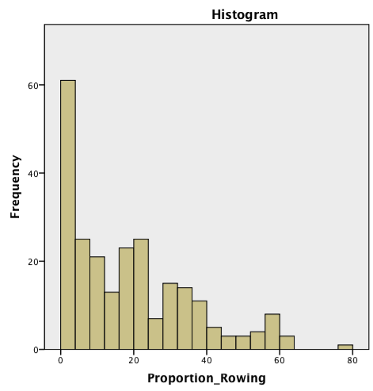
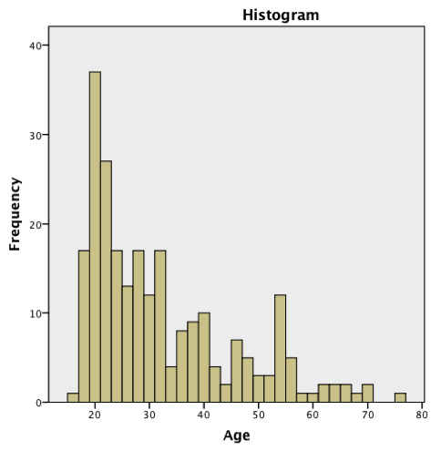
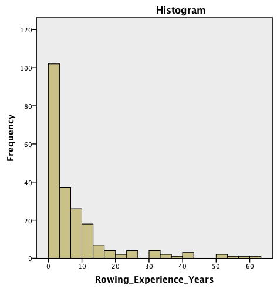
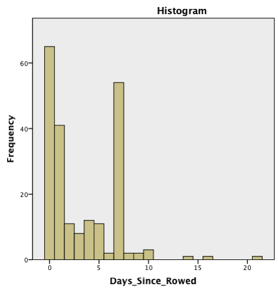
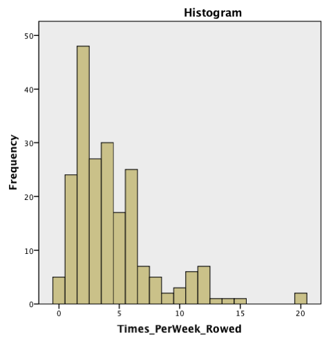
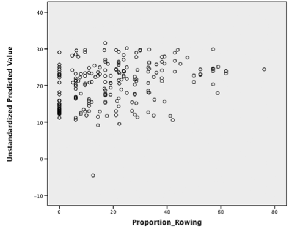
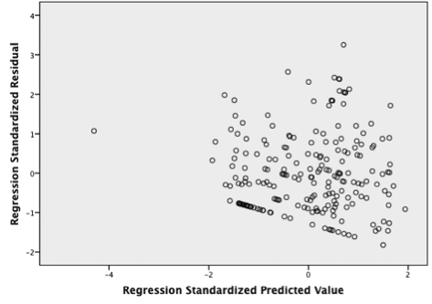
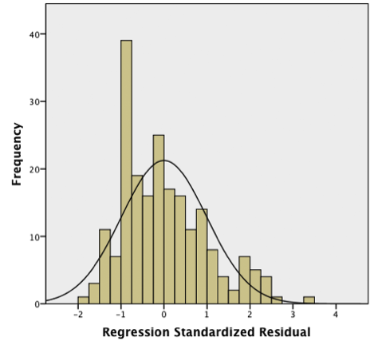

Before analysing the determinants of biased word-interpretation in
rowers, we need to assess whether rowers actually have a biased
understanding of the ambiguous words compared to non-rowers. If this is
the case, we would expect the proportion of words interpreted with a
rowing-related meaning to be higher for rowers as compared to
non-rowers. To assess determine whether this is indeed the case, we
compare Proportion_Rowing between the rowing and control participants
with the help of an ANOVA.
SPSS: ANOVA
This analysis yields a significant difference between the two groups, where rowers name more words from the rowing context compared to the control group, F(1,240) = 36.755, p<.001.
When conducting an ANOVA, it is good practice to ascertain whether the assumptions underlying the analysis are valid. The Normality assumption can be checked with a Shapiro-Wilks test. If we look at Proportion_Rowing, we assert that the variable is not normally distributed in either of the two groups, (W=.927, df=215, p<.001 for rowers and W=.427, df=27, p<.001 for non-rowers).
While an ANOVA is relatively robust against (small) deviations from
Normality, it may be a good idea to check the robustness of the results
by repeating the analysis with a test which does not depend on the
Normality assumption. In this case, we can use a Mann-Whitney U-test.
This test uses the rank-ordered values in
the sample rather than the original (metric) values and therefore compares if one of
the group has higher ranks on average. Here, our results get confirmed, and we find
again a significant difference between the groups.
U=593.0, Z=-6.793, p<.001.
SPSS: Mann-Whitney
We will now focus more closely on the factors that affect the biased interpretation of ambiguous words in rowers. In many situations, it is helpful to start with some preliminary correlations in order to assess the relations between the variables in the dataset. We use bivariate correlations between all possible combinations of our four independent and the dependent variable. First, we need to filter out the control participants, since these don’t have any values for the variables that we’d like to examine. We yield the following table:
| N=215 | Proportion_
Rowing |
Age | Rowing_Experience_
Years |
Days_Since_
Rowed |
Times_PerWeek_
Rowed |
|---|---|---|---|---|---|
| Proportion_
Rowing |
--- | R=-.098 p>.05 |
R=.037 p>.05 |
R=-.316 p<.001 |
R=.183 p<.01 |
| Age | R=-.098 p>.05 |
--- | R=.169 p<.05 |
R=.125 p>.05 |
R=-.264 p<.001 |
| Rowing_Experience_
Years |
R=.037 p>.05 |
R=.169 p<.05 |
--- | R=.081 p>.05 |
R=-.080 p>.05 |
| Days_Since_
Rowed |
R=-.316 p<.001 |
R=.125 p>.05 |
R=.081 p>.05 |
--- | R=-.182 p<.01 |
| Times_PerWeek_
Rowed |
R=.183 p<.01 |
R=-.264 p<.001 |
R=-.080 p>.05 |
R=-.182 p<.01 |
--- |
Judging from these correlations, a more recent rowing experience causes people to name more rowing interpretations (R=-.316) and generally, higher rowing frequencies lead to more interpretations in the rowing context (R=.183).
Additionally, we see that amongst our four predicting variables, Age correlates with Rowing_Experience_Years and Times_PerWeek_Rowed. Older people seem to have more experience (R=.169), but row less frequently (R=-.264). Lastly, the rowing frequency and the time since the last rowing experience are negatively correlated, meaning that more frequent rowers had more recent experiences (R=-.182). Highly correlated predictor variables can give problems in a regression analysis, making it difficult to identify their unique relation with the dependent variable. However, these correlations are relatively moderate and so we can first take a look at the regression and some additional measures for collinearity.
SPSS: Correlation
It is also advisable to take a look at the distributions of all variables before conducting a regression. Therefore, we will now illustrate histograms for the four independent and the dependent variable in order to identify potential irregularities (e.g. variable has two extreme peaks and no values between).

 
 
All variables are skewed to the right, having many low values. However, this shouldn't be a problem for the analysis as the variables still comprise a decent range of values and don't pile up in just one place. Regarding the dependent variable Proportion_Rowing, many people do not mention a single rowing interpretation and there seems to be a single case with almost 80% of such words.
SPSS: Explore variables
According to our theoretical model, we will test a regression of the following form:
Proportion Rowingi = β0 + β1 Agei + β2 Rowing_Experience_Yearsi + β3 Days_Since_Rowedi + β4 Times_PerWeek_Rowedi + εi
We restrict our sample to subjects with Condition=’Rower’ (N=215).
SPSS: Select Cases
Initially, we can just estimate a full regression with all independent (predictor) variables and no further concerns in order to get a starting point. In a following step, we can then eliminate predictors that do not significantly contribute to our model and are therefore unnecessary. It is also advisable to check if the assumptions of a linear regression are met with our analysis. Our regression yields the following results:
| R | R Square | Adj. R Square | Std. Error of Estimate |
|---|---|---|---|
| .345 | .119 | .102 | 15.92719 |
| Sum of Squares | df | Mean Square | F | Sig. | |
|---|---|---|---|---|---|
| Regression | 7,038.455 | 4 | 1,759.614 | 6.936 | .000 |
| Residual | 52,257.131 | 206 | 253.675 | ||
| Total | 59,295.586 | 210 |
| Coefficient | B | Std. Error | Beta | t | Sig. | Tolerance | VIF |
|---|---|---|---|---|---|---|---|
| Constant | 23.090 | 3.723 | 6.203 | .000 | |||
| Age | -.054 | .084 | -.044 | -.646 | .519 | .905 | 1.105 |
| Rowing_Experience_Years | .114 | .101 | .075 | 1.125 | .262 | .966 | 1.035 |
| Days_Since_Rowed | -1.392 | .323 | -.288 | -4.307 | .000 | .958 | 1.043 |
| Times_PerWeek | .612 | .337 | .125 | 1.814 | .071 | .906 | 1.103 |
We interpret the results in the following way:
The R Square value is .119, which is not overly high, but in the range of what you usually expect in the Social Sciences. It means we can predict about 12% of the variance in word interpretation with the help of our model. Since we’re using a multiple regression with more than one predictor variable here, we should also look at the adjusted R Square (.102). This value takes into account that the model has to do better due to the multiple sources for explanations and therefore decreases the values of the R Square according to the number of predictors.
The second table gives us a summary of the errors that are explained by the model and the amount that remains unexplained. We basically yield our R Square when we divide the errors explained by the regression (7,038.455) by the total sum of errors (59,295.131). With the help of the F-value (6.936, p<.001), we can also see that our model makes a better prediction than the null model, which would just take the mean value of the dependent variable as prediction.
The third table shows the predictors and whether they significantly contribute to the model. If we look at the t- and significance-values, we can see that the p-values for Age, Rowing_Experience_Years and Times_PerWeek are p>.05. However, for Times_PerWeek the value is very close to this threshold. Strictly speaking, we can’t say that these two variables have an influence on the dependent variable that is significantly different from zero. Days_Since_Rowed is the only significant variable with a B-value of -1.392, which tells us that the further your recent rowing experience has been in the past, the fewer words you associate with rowing. We can interpret the B-value in the following way: holding everything else constant, every additional day that the subject hasn’t rowed causes 1.392% less word associations with rowing.
As already indicated, it is worth checking our independent variables, their correlation and their individual relation with the dependent variable to detect potential misinterpretations or further areas for investigation.
SPSS: Full Regression
Before putting too much faith in the results of the analysis, it is good practice to check whether the assumptions of the regression analysis hold. Note that, as the assumptions concern the residuals of the model, this should really be done for any model that is estimated. In this section, we will focus on the full regression reported abova
Let's take a look at the assumptions of the regression and whether there could be violations. We'll start off very basically by examining whether we can assume a linear relationship between dependent and independent variables. Nonlinearity is usually most evident in a plot of the observed versus predicted values or a plot of residuals versus predicted values, which are a part of our regression output. However, linearity is hard to detect and one should always try alternative models if they match the theoretic assumptions about the relations of the variables.
 
The points should be symmetrically distributed around a diagonal line in the left plot or in a circular fashion around the centre in the right plot. Look carefully for evidence of a "bowed" pattern, indicating that the model makes systematic errors whenever it is making unusually large or small predictions. The model makes obviously wrong predictions for those people who do not mention a single rowing interpretation. We can also see that the standardized predicted value for one case is particularly odd with a value of about -4.
A regression model of good quality should have normally distributed, homoscedastic residuals. For homoscedasticity and normally distributed errors, we can look at some plots. Usually, we get a plot of residuals vs. predicted values with our output (since we ticked the box in the regression) that can tell us about the relationship of those.

The two plots suggest that the errors are not normally distributed and that there is potentially a problem with heteroscedasticity. The Shapiro-Wilk and Kosmogorov-Smirnoff test are both significant for the standardized residuals, indicating that these aren't normally distributed. However, except for the peak around -1 for the standardized residuals and the single case around -4 for the standardized predicted value, the plots do not look very unusual. This case on the far left hand side has a very low prediction according to our model for the dependent variable, but at the same time, the actual value for this subject is also low. Therefore, this case is not an outlier that produces a lot of error, but an outlier that gets an unusually low prediction compared to all other subjects. If we exclude this case from the analysis, the results aren't affected in any way.
We have included the tolerance and VIF values in our regression tables, which do not indicate that there is a major problem with our predictors. Tolerance and VIF (1/tolerance) should be close to 1. In order to explore multicollinearity some more, we can simply look at the correlations of our independent variables. As long as VIF<5 (tolerance>.20) there is no need for serious concern.
We can use the backwards approach in SPSS, where the software stepwise excludes variables that are not necessarily needed in the model. If some variables are removed, others might get different estimates and significances for the newer, slimmer model. By using the backwards method, we yield:
| R | R Square | Adj. R Square | Std. Error of Estimate |
|---|---|---|---|
| .335 | .112 | .104 | 15.90800 |
| Sum of Squares | df | Mean Square | F | Sig. | |
|---|---|---|---|---|---|
| Regression | 6,658.153 | 2 | 3,329.076 | 13.155 | .000 |
| Residual | 52,637.433 | 206 | 253.675 | ||
| Total | 59,295.586 | 210 |
| Coefficient | B | Std. Error | Beta | t | Sig. | Tolerance | VIF |
|---|---|---|---|---|---|---|---|
| Constant | 22.065 | 2.216 | 9.955 | .000 | |||
| Days_Since_Rowed | -1.381 | .321 | -.286 | -4.298 | .000 | .967 | 1.034 |
| Times_PerWeek | .642 | .326 | .131 | 1.968< | .050 | .967 | 1.034 |
We obtain similar results to the full regression, although the p-value for Times_PerWeek is now exactly on the border of significance. Note that the estimates of the effects of predictors, and their significance, are affected by the other predictors in a model when the predictors are not completely independent. Using a backwards stepwise procedure, we have arrived at a simpler model, which should be preferred to a more complex one if the complexity is not justified by additional explanatory power. Additional options are, for example, to modify some of the independent variables or to calculate a regression for relational factors or non-linear relationships.
SPSS: Reduced Regression
We could also check whether there is a non-linear, maybe quadratic relationship between the predictors and the dependent variable. One can frequently observe that variables which measure a certain timespan, such as age or experience, show peculiar behaviour for particularly high values. Therefore, we transform age and experience to control for quadratic effects. First, we centre these variables to reduce the collinearity between quadratic and non-quadratic variables (e.g. Age and Age2 would otherwise be highly correlated). Therefore, we create two new centred variables, for Age and Rowing_Experience_Years, where we subtract the mean (Variablecen=Variable-Mean(Variable)). Following this, we can square the new centred variables and add these to our regression (Variablesquared=Variablecen2).
SPSS: Descriptives
SPSS: Center Variables
| R | R Square | Adj. R Square | Std. Error of Estimate |
|---|---|---|---|
| .369 | .136 | .111 | 15.84358 |
| Sum of Squares | df | Mean Square | F | Sig. | |
|---|---|---|---|---|---|
| Regression | 8,078.707 | 6 | 1,347.951 | 5.370 | .000 |
| Residual | 51,207.879 | 204 | 251.019 | ||
| Total | 59,295.586 | 210 |
| Coefficient | B | Std. Error | Beta | t | Sig. | Tolerance | VIF |
|---|---|---|---|---|---|---|---|
| Constant | 23.935 | 2.517 | 9.511 | .000 | |||
| Age | -.040 | .117 | -.033 | -.340 | .734 | .461 | 2.171 |
| Age2 | -.001 | .006 | -.021 | -.228 | .820 | .485 | 2.060 |
| Rowing_Experience_Years | .472 | .203 | .310 | 2.326 | .021 | .239 | 4.189 |
| Rowing_Experience_Years2 | -.012 | .006 | -.270 | -2.028 | .044 | .238 | 4.198 |
| Days_Since_Rowed | -1.332 | .323 | -.276 | 4.128 | .000 | .950 | 1.052 |
| Times_PerWeek_Rowed | .573 | .337 | .117 | 1.704 | .090 | .900 | 1.111 |
Interestingly, when controlling for quadratic effects, experience, but not age, becomes significant. The B-values suggest that there is a declining effect for high values of experience, since the Rowing_Experience_Years2 has a negative sign and becomes more influential with larger values. There is still considerable collinearity between experience and its squared equivalent, but a rule-of-thumb suggests that Tolerance values greater than 0.2, respectively VIF smaller 5, indicate acceptable collinearity. If we try the same regression with non-centred values, the collinearity will not fulfil these criteria. The backwards regression can help us to cancel out unnecessary variables and the model reduces to:
| R | R Square | Adj. R Square | Std. Error of Estimate |
|---|---|---|---|
| .366 | .134 | .117 | 15.78742 |
| Sum of Squares | df | Mean Square | F | Sig. | |
|---|---|---|---|---|---|
| Regression | 7,951.607 | 4 | 1,987.902 | 7.976 | .000 |
| Residual | 51,343.979 | 206 | 249.243 | ||
| Total | 59,295.586 | 210 |
| Coefficient | B | Std. Error | Beta | t | Sig. | Tolerance | VIF |
|---|---|---|---|---|---|---|---|
| Constant | 23.499 | 2.315 | 10.152 | .000 | |||
| Rowing_Experience_Years | .458 | .201 | .301 | 2.276 | .024 | .241 | 4.152 |
| Rowing_Experience_Years2 | -.012 | .006 | -.269 | -2.022 | .044 | .238 | 4.196 |
| Days_Since_Rowed | -1.349 | .321 | -.279 | 4.205 | .000 | .955 | 1.047 |
| Times_PerWeek_Rowed | .626 | .325 | .128 | 1.928 | .055 | .959 | 1.042 |
Although the Times_PerWeek_Rowed doesn’t quite meet the .05 significance-barrier, we yield a comprehensive and coherent model to describe the interpretation of words in a rowing context. According to our estimations, experience leads people to more frequently interpret words in a rowing context, however, for particularly low and high values of experience, this effect is weakened through the negative quadratic term. Additionally, the time that has passed since the last rowing experience is crucial and people who have rowed more recently, interpret more words in a rowing context. Furthermore, the rowing frequency of people is decisive and causes more frequent rowers to use more rowing interpretations.
{kind=link}
{kind=link}
{kind=link}
{kind=link}
{kind=link}
{kind=link}
{kind=link}
{kind=link}
{kind=link}